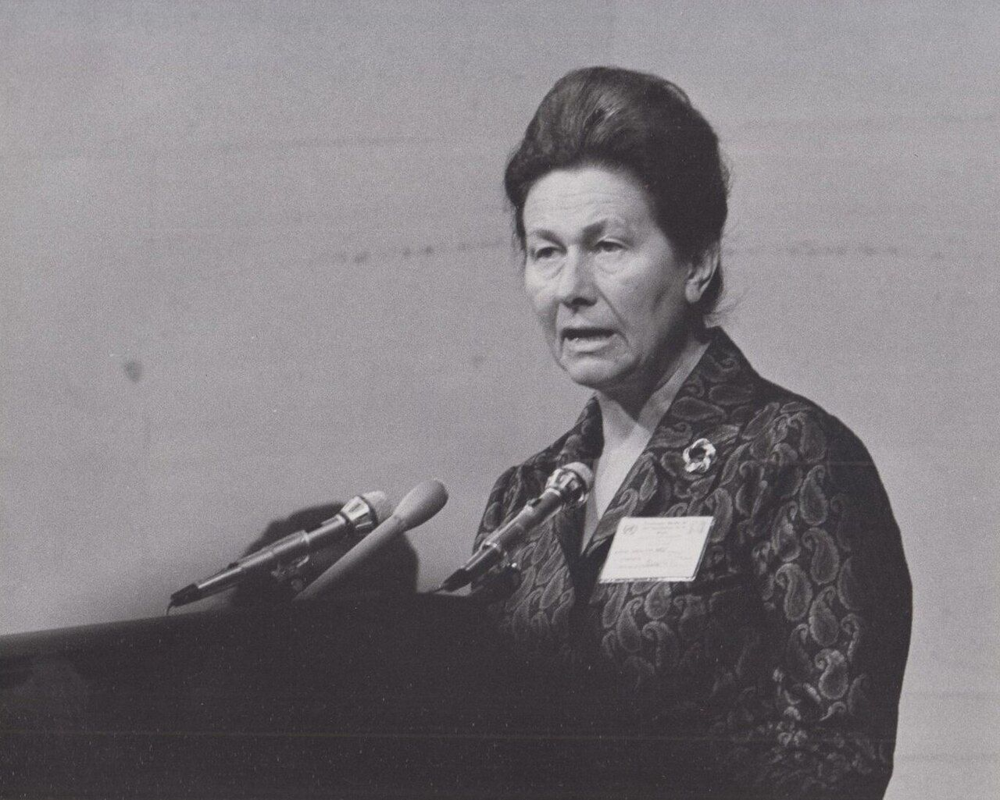

Implementing Women's Rights through CEDAW: Report on CEDAW Committee's Hearings on Bangladesh's Fifth Periodic Report
A first-hand account of the CEDAW Committee's July 2004 New York hearing on Bangladesh's Fifth Periodic Report, which Dr. Hossain and Ayesha Khanam attended for the shadow report by ASK, Bangladesh Mahila Parishad and Steps. It criticises the government's late and defensive report and its refusal to lift reservations to Articles 2 and 16(1)(c), quoting the official replies. It sets out the Committee's recommendations and what activists can do next.

Gender equality has now become a mantra in policy debates. But how seriously have state institutions taken on their responsibilities to eliminate the causes of discrimination against women. A serious commitment would demand legal and policy reform and appropriate plans for their implementation.
In 1984, Bangladesh ratified the UN Convention on Elimination of all forms of Discrimination against Women (CEDAW) and by doing so, it accepted an obligation to endorse all ratified provisions of the Convention into domestic legislation and to promote equality through policies and programmes. The means to equality should have established an equality in results.
But as women realize, many of these guarantees have not moved beyond the realm of rhetoric. Particularly in the private sphere, where much of women’s lives are spent, inequality determines relations in marriage, in divorce and in inheritance. We may well ask why then do women across the world hail the Convention as a charter of rights, when the state does so little to implement its provisions? How can we, as activists, use the convention to further state’s responsibility in promoting equality through gender sensitive laws, policies and affirmative action?
Unlike several other treaty bodies the CEDAW Committee monitors progress in eliminating discrimination in each country through state reports submitted every four years. Government reports, however, tend to be defensive and do not correctly analyse the reasons for continued discrimination. The reports are supposed to be shared with women’s rights groups and concerned organizations, but governments are free not to incorporate suggestions made. Thus since these reports may not always give a complete picture, the Committee encourages submission of Shadow Reports from non-government organizations or women’s groups, to assist them to evaluate country situations. Therefore, Shadow Reports are a well recognized means for assessment of the existing discrimination against women.
In Bangladesh, Ministry of Women and Children’s Affairs has been mandated to draft these reports and to monitor implementation. Bangladesh submitted its initial report, upon its ratification of the Convention in 1984, and five periodic reports to the Committee since then. The Fifth Periodic report was submitted in December 2002 to cover the period from 1997-2001. The report was submitted a year after it was due, and it therefore referenced developments uptil 2002. Although this report was shared with representatives from several organizations in September 2002, their recommendations to withdraw reservations to articles 2 and 16.1© or to amend national laws on citizenship seem to have been ignored. In fact, over the last five years the government has taken little notice of the recommendations made by the CEDAW Committee at its last appraisal of the Combined Third and Fourth Report. Instead, it cobbled together its report well after its submission deadline. It is obvious that there has been little progress in meeting the Committee’s concerns or in implementing its recommendations.
The Fifth Periodic Report thus reads like an apology quoting old laws and policies without indicating implementation measures or their impact. In view of the inadequacy of the Fifth Report three organizations Ain o Salish Kendra (ASK), Bangladesh Mahila Parishad and Steps Towards Development decided to prepare a Shadow Report which analysed the government’s response to the Committee’s Concerns in 1997 and the current situation. This report was shared by the three organizations with their partners and members and with a large number of organizations at two national workshops in Dhaka in February and June 2004.
After examining the two reports, the CEDAW Committee raised 42 questions by way of clarification. It also questioned the government’s lack of progress in withdrawing reservations to Articles 2 and 16.1©. The government’s written answers to the Committee, appeared to have been drafted in haste, and were again an unsuccessful attempt at covering up the reasons for continued lack of appropriate action. Some examples show not only the inadequacy of the answers, but point to the government’s lack of recognition of the problems faced by women from different communities.
The CEDAW Committee’s hearings on Bangladesh’s report were scheduled for July 9, 2004 in New York. A large government delegation of 17 persons led by the Minister for Women’s Affairs included representatives of the Ministry of Women’s Affairs, Law, Foreign Affairs, Home, Religious Affairs, PLAGE and two ngos. They arrived a day earlier in New York and thus had little time to observe the tenor of Committee’s appraisal of other country reports (Spain, Angola and Equatorial New Guinea had reported on 7 and 8 July).
Unlike other official UN proceedings, the CEDAW Committee hearings are open and in fact encourage non-government groups or women’s rights activists to attend the meeting. On 6 July, therefore, the Committee held a separate closed session with international agencies such as ILO, FAO, WFP, UNICEF and UNIFEM. This was followed in the afternoon with an open session with ngos who were asked to make brief statements (of three to five minutes each) to identify their priority concerns regarding continuing discrimination and to respond to questions from the Committee. NGOs from Spain, Angola, Equatorial New Guinea and Bangladesh gave short statements. From Bangladesh Ayesha Khanam and Hameeda Hossain attended the hearings. The priority concerns raised by us included withdrawal of reservations to article 2 and 16.1©, amendment of national laws on citizenship, conditions of migrant workers and garment workers, enactment of a law on domestic violence, special measures for direct elections of women to reserved seats in Parliament. We also recommended an independent monitoring mechanism for implementation of CEDAW provisions. The Committee members had already seen our Shadow Report and were appreciative of its analyses and information which they had used to formulate their questions.
CEDAW’s reporting procedure is a useful way to monitor and assess the seriousness which the government attaches to respecting and protecting the rights of women. The Chairperson emphasized that its hearings were to be seen as a means of “constructive dialogue” which would enable the government to move towards its avowed goal of eliminating discrimination.
Although successive governments have submitted five yearly reports between 1984 and 2002, and there has been some progress in say education or in women’s representation at the local tiers of governance, gross inequalities in access to opportunities and consequent results are embedded in state policies. To begin with the government has taken no serious initiative to lift reservations to article 2 and 16.1©, the two articles which form the core principles of CEDAW. Instead in each report the government has given vague and repetitious arguments claiming to examine justifications for withdrawal of reservations. In the Third and Fourth Periodic Report it was said that the government would examine conditions under which other Muslim countries had ratified these articles. It shouldn’t take twenty years to find this out. The Shadow Report showed that Jordan, Lebanon, Kuwait, Turkey, Tunisia Yemen were examples of Muslim countries who have not made reservations to article 2, and Bangladesh could follow their example particularly as we are not governed by Shariah Law. On the contrary, constitutional guarantees of equality in all state and public matters should offer a precedent. It would have been wise for the official delegation to save itself from further embarrassment by withdrawing reservations before the meeting or at the meeting itself.
This was, however, not done. Instead the Minister’s written statement offered excuses of the issue being under “active consideration” and a weak promise to raise it in the Cabinet. But when and to what effect was not very certain. The reasons for reservations to Article 16.1© were equally irrational. The Committee had asked in question 42, what was the status of the Ministry of Law examination of the withdrawal of reservations, and the progress made towards this. The government’s response (obtained from the Law Ministry) was that:
“Article 2 is one of the vital articles of CEDAW Conventions and 16.1© is related with the Marriage and Divorce right of women which is the main controlling factor of family life of women. But the Constitution of Bangladesh ascertained equal rights of women in the country. In the Constitution there is a provision that backward sections of society may get special priority for their development. Women in Bangladesh as a backward section may get special privilege and priority for their legal rights and development. These two provisions of the Constitution are in the same tune of CEDAW Convention. There is no contrast between CEDAW Convention and Constitution of Bangladesh. But in Bangladesh majority of populations is Muslims. The Principle of Holy Quran and Sunnah guide these Muslim peoples.
The peoples of Bangladesh are mostly religious minded and they follow ideals of religion in their marriage and other social functions and they are happy with the religious dispensation.
As these two Articles are apparently a little bit contrasting with the customs and traditions of religion so the Government is very alert in this sensitive area in decision making. But the Government is committed to provide equal rights to women.”
In question 38 the Committee had referred to the comment of the Rapporteur on Freedom of Religion and Belief (report no A/55/280/Add-2) “…since 1956…government have refused to amend religious personal laws in favour of the rights of Hindu women, despite the fact the same reform has been introduced for Muslims” and asked for information on the status of women from religious minorities, within the framework of their religious personal laws. To this the government response was a non sequitur:
“Bangladesh is a country of communal harmony where people belonging to all religions are living together and are performing their religious rituals freely and peacefully. There is no barriers/hindrances in having good personal and family life in following their religions.”
Apart from their concern that reservations could not be placed on core principles for an indefinite length of time, the Committee members raised substantial questions on continuing legal discrimination, the failure to endorse CEDAW provisions into domestic legislation, or to implement equality provisions, conditions of industrial and migrant workers, and the lack of special measures to making women’s representation more democratic. The Chairperson summed up the Committee’s concerns. While positive steps had been taken in the field of education and micro-credit, other measures needed to be taken to endorse CEDAW provisions in full into domestic legislation, implement equality in policies and programmes, evolve a clearer definition of discrimination, recognize domestic violence and marital rape in the law remove the discrepancy between constitutional rights and inequality in personal rights create a vigorous sensitization of violence against women, by implementing laws, attempting to change the social tradition and culture, training of judiciary, health and law personnel, address violations of human rights as a priority rather than find excuses for such violations in the name of religion. Violence could not be justified in the name of religion.
The purpose of the CEDAW Committee’s monitoring of progress on elimination of discriminatory policies and laws was somehow lost on the government. Instead of acting on the recommendations made by the Committee in 1997, in the four years before the next report, the government has been more concerned with drafting of a last minute report so as to cover up absence of effective measures that could have addressed discrimination in reality. A detailed analyses of the report shows, that, indeed, the government did agree to amend the legal discrimination in citizenship rights, to enact laws on domestic violence, to take temporary special measures for women’s representation, to take action in cases of violence instigated by fatwas etc. But action remained far behind its stated commitment.
The Committee assessed the government’s answers during an entire working day. Its will send its priority concerns and recommendations to the Ministry. The government is expected to meet at least some of its obligations in the next four years. Human rights and women’s rights activists can facilitate this by taking on more sustained tasks of disseminating awareness of women’s rights under CEDAW, monitoring and lobbying for government compliance with its provisions, using CEDAW articles to uphold women’s rights in court, and researching into law reforms.
Concerted pressure by a significant mass and systematic advocacy by informed groups may bend the government towards making efforts to implement the state’s commitment to equality and non-discrimination.
Hameeda Hossain and Ayesha Khanam attended the CEDAW Committee Hearings from 1 to 9 July, 2004 in New York. This report is their personal assessment of the government’s presentation, the Committee’s queries and government response to these queries.
See annexures for separate written statements by each.